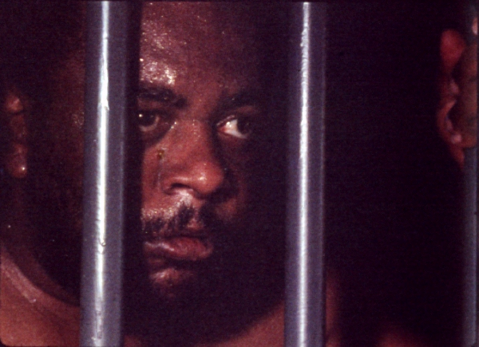

O DIA EM QUE DORIVAL ENCAROU A GUARDA (El dia que Dorival se enfrentó a la guardia)
|
(35 mm, 14 min, cor, 1986) En una prisión militar, en una noche de mucho calor, el negro Dorival solo tiene ganas de una cosa: darse un baño. Para conseguirlo, va a tener que enfrentar un soldadito asustado, un cabo con manía de héroe, un sargento que hecha en falta a la novia, un teniente prepotente - y acabar con la tranquilidad de aquella noche en el cuartel. |
 Foto por Christian Lesage: João Acaiabe |
{kind=link}
ASSISTIR (PORTA-CURTAS)
Dirección: Jorge Furtado y José Pedro Goulart
Guión: Giba Assis Brasil, José Pedro Goulart, Jorge Furtado y Ana Luiza Azevedo
Dirección de Fotografia: Christian Lesage
Dirección de Arte: Fiapo Barth
Música: Augusto Licks
Dirección de Producción: Gisele Hiltl y Henrique de Freitas Lima
Montaje: Giba Assis Brasil
Asistente de Dirección: Ana Luiza Azevedo
Una Producción de la Casa de Cinema PoA
Elenco Principal
João Acaiabe (Dorival)
Pedro Santos (Soldado)
Zé Adão Barbosa (Cabo)
Sirmar Antunes (Sargento)
Lui Strassburger (Teniente)
Prêmios
- 14º Festival del Cine Brasileño, Gramado, 1986:
Mejor Corto Nacional (dividido en el Jurado Oficial, solo en el Jurado Popular y en el Premio de la Crítica), Mejor Actor de Corto (João Acaiabe) y más 5 premios regionales - 21º Festival de Cine Iberoamericano, Huelva, España, 1986:Mejor Corto metraje de Ficción
- 8º Festival Internacional del Nuevo Cine Latinoamericano, La Habana, Cuba, 1986:Mejor Corto de Ficción
- Exibido na mostra "Os 10 Melhores curtas brasileiros da década, no Cineclube Estação Botafogo, Rio de Janeiro, 1990.
Crítica
"Trasgresión es la palabra que se aplica a EL DIA EN QUE DORIVAL..., inspirado en una historia del riograndense Tabajara Ruas: el "negro" Dorival (interpretación notable de João Acaiabe), en cana, resuelve enfrentar a los hombres y conquistar un baño a cualquier costo. Humor y violencia se cruzan en dosis exactas, y el resultado son 14 minutos intensos de seguridad y brillo."
(Caio Fernando Abreu, O Estado de São Paulo, 08/08/86)
"En EL DIA EN QUE DORIVAL ENTRENTÓ A LA GUARDIA, aunque la fotografía no avance para el lado fantasista, se siente (...) una marcación fuerte, y principalmente un cierto preciosismo en los encuadres que produce una imagen potente. (...) También posee un universo ficcional realista, a pesar del juego inteligente con la citación textual, por donde pasan King Kong, farwest y 'Casablanca'."
(Fernão Ramos, Folha de São Paulo, 15/08/86)
"Un clima de entusiasmo tomó al Núcleo Imaginario. Expresiones como 'genial', 'demasiado', 'fantástico' puntuaron la discusión. Y no era para menos. Habíamos acabado de asistir a EL DÍA EN QUE DORIVAL ENFRENTÓ A LA GUARDIA. Para el que ya estaba resignándose con tan limitada dieta cinematográfica, la película fue un plato lleno y un verdadero banquete de cine. (...) La música, la fotografía, la iluminación y la dirección son excelentes. (...) El trabajo de João Acaiabe en la construcción del prisionero Dorival es primoroso. DORIVAL espeja, al fin, el trabajo colectivo de artistas y técnicos que crecieron bajo el signo de la represión, fueron influenciados por el cine americano y por la televisión y supieron asimilar y devolver todo eso con un espíritu crítico aguzado."
(Rosa Lima, Cine Imaginário, Rio de Janeiro, agosto/86)
"Furtado, em O DIA EM QUE DORIVAL ENCAROU A GUARDA, consegue mesmo inserir King Kong e Tex Willer em um curta sobre prisão e racismo, sobre a estupidez burocrática e a repressão carcerária. É um Zemeckis jovem."
(Roberto Silvestri, Il Manifesto, Milão, 07/03/91)
11/04/1986